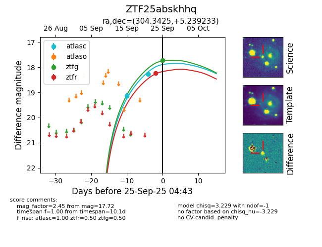
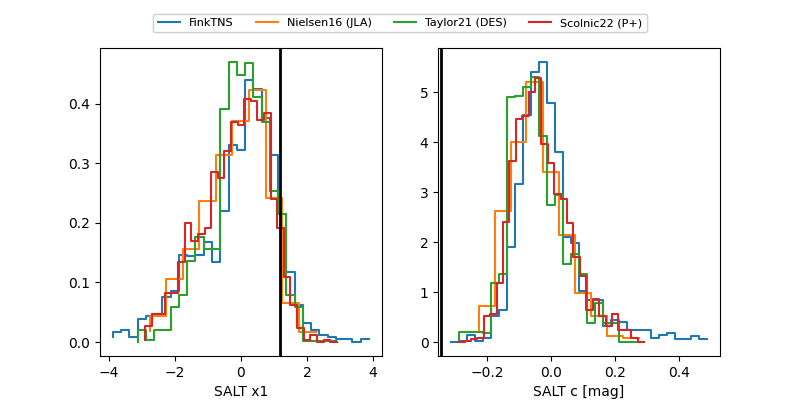

FINK: ZTF25abskhhq
Lasair: ZTF25abskhhq
ALeRCE: ZTF25abskhhq
ZTF25abskhhq (ztf,fink)
equatorial (ra, dec) = (304.3425,+5.23923)
galactic (l, b) = (47.8899,-16.43556)


last atlasc=18.27, ztfg=17.72, ztfr=18.24
2 atlasc, 1 ztfg, 1 ztfr detections